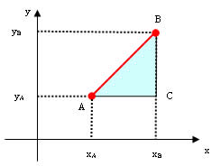
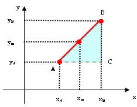
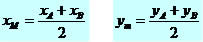
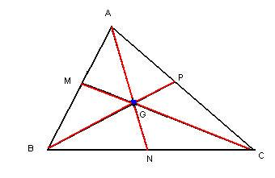

A Geometria Analítica foi criada por René Descartes (1596 – 1650), no intuito de relacionar a álgebra com a Geometria, possibilitando um estudo mais aprofundado de objetos geométricos. Com o auxílio da Geometria Analítica (GA) podemos, através de métodos algébricos, estudar as propriedades do ponto, da reta e de figuras. No estudo da GA trabalharemos constantemente com o Plano Cartesiano.
Distância entre dois pontos
Observe os pontos A e B no plano cartesiano, iremos estabelecer através de métodos algébricos uma fórmula geral para calcular a distância entre pontos.

Ao analisarmos a construção acima podemos observar o triângulo retângulo ABC, sendo que a distância entre os pontos A e B nada mais é que a hipotenusa do triângulo. Sabemos que o triângulo retângulo admite a relação de Pitágoras hip² = cat² + cat².
Ao aplicarmos Pitágoras teremos a seguinte situação:
* Cateto: segmento AC xB – xA
* Cateto: segmento BC yB – yA
* Hipotenusa: segmento AB (distância entre os pontos)
* d²AB = (xB – xA)² + (yB – yA)²
Ponto Médio de um Segmento e Condição de alinhamento de três pontos
Dados os pontos A e B vamos analisar a ilustração abaixo e demonstrar o ponto médio entre eles, sugerindo uma fórmula geral para esse tipo de cálculo.

Podemos notar que no eixo x a distância entre xA:xM e xM:xB são iguais e no eixo y a distância entre yA:yM e yM:yB são iguais.
Podemos concluir que:

Baricentro
A junção das medianas de um triângulo é o que determina o baricentro da figura. E tais medianas de uma forma triangular irão sempre se interromper em um mesmo ponto, em que esse é determinado como sendo o baricentro do triângulo.
Observe na figura a seguir um exemplo do que acabamos de considerar neste parágrafo. Perceba que M, N e P podem ser compreendidos como pontos médios dos segmentos BC, AB e AC, respectivamente.
Baricentro do triângulo

Compreenda e observe que na forma geométrica descrita acima, ao ser traçado o segmento de reta correspondente às medianas, as mesmas se cruzam em um ponto chamado de “G”, o qual podemos classificar como sendo o baricentro do triângulo ABC. Um triângulo deve ser determinado no plano cartesiano para que assim sejam verificadas as coordenadas em relação ao ponto G, ou seja, o baricentro.
Observando as coordenadas:
A (xA,yA); B(xB,yB); C(xC,yC); G(xG,yG)
As coordenadas do baricentro são determinadas a partir da relação das coordenadas dos três pontos do triângulo. Tal relação se dá, numericamente, da forma a seguir:
XG = (XA + XB + XC)/3
YG = (YA + YB + YC)/3
Assim, é possível determinar as coordenadas do baricentro por meio das coordenadas referentes aos pontos da figura triangular. Confira abaixo:
G (XA + XB + XC)/3; (YA + YB + YC/3)?
De tal forma que em determinadas situações, tendo em mãos os números referentes às três coordenadas dos vértices do triângulo, ficará viável determinar o baricentro do triângulo. Vale ressaltar que, de posse das coordenadas do baricentro e somente dois vértices, é possível encontrar a coordenada referente ao terceiro vértice por meio da relação das coordenadas de x e y do baricentro e vértices respectivos.